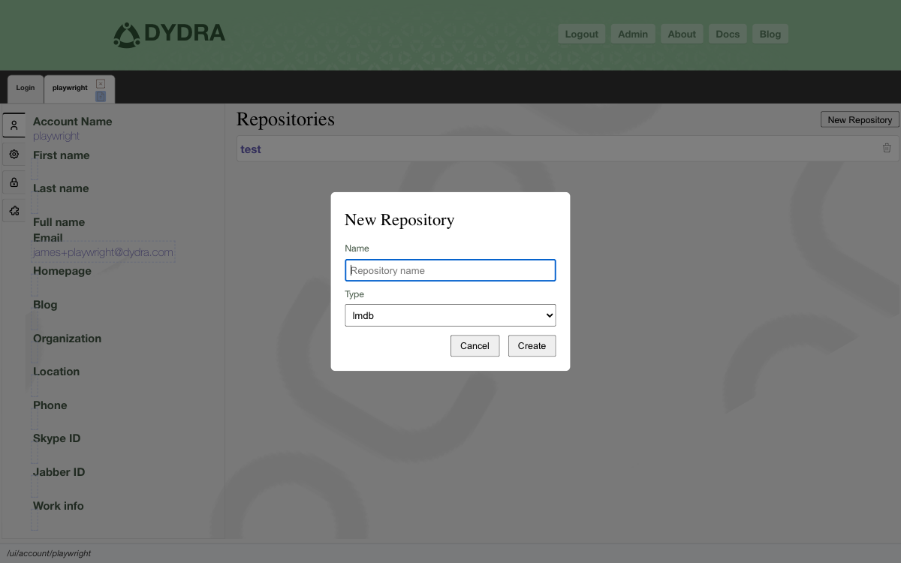
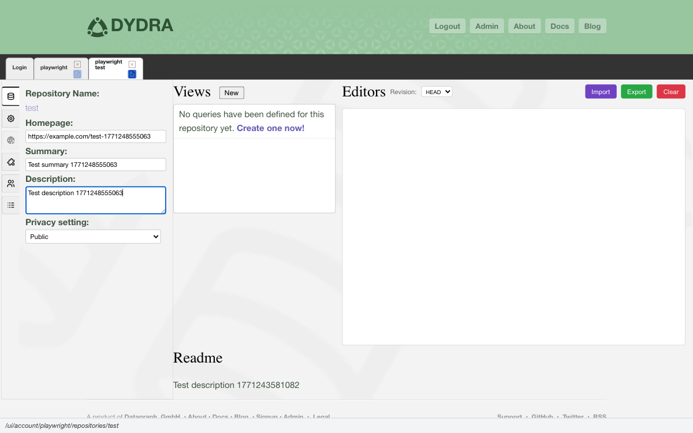
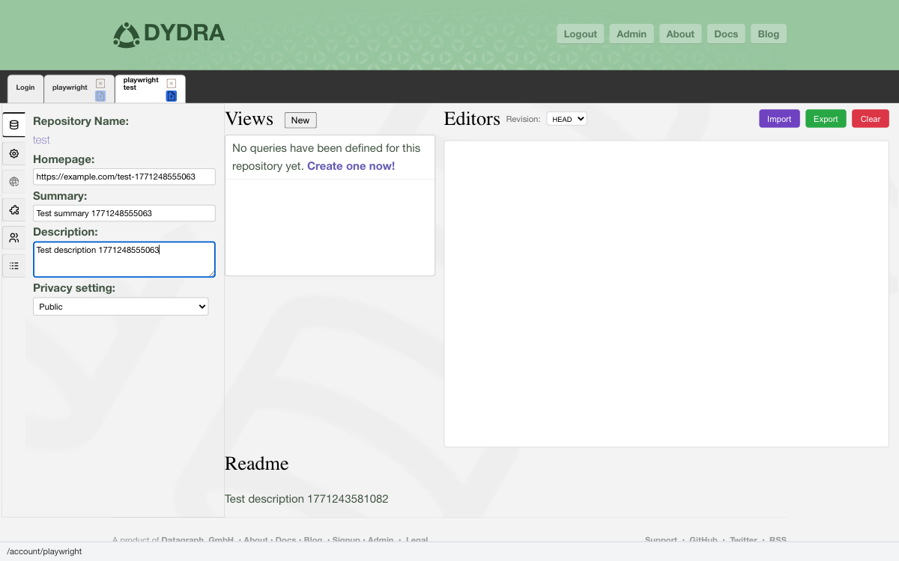
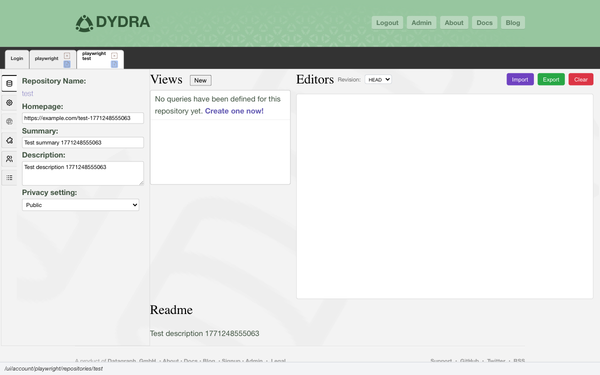
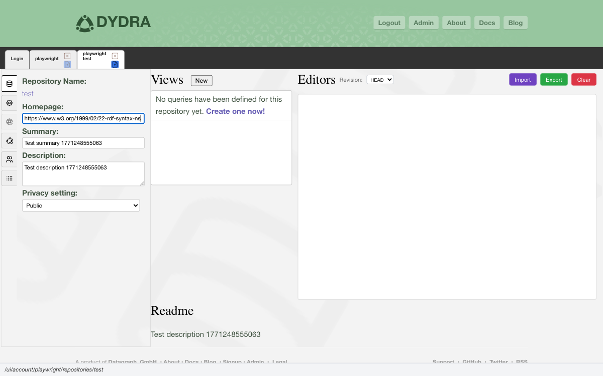
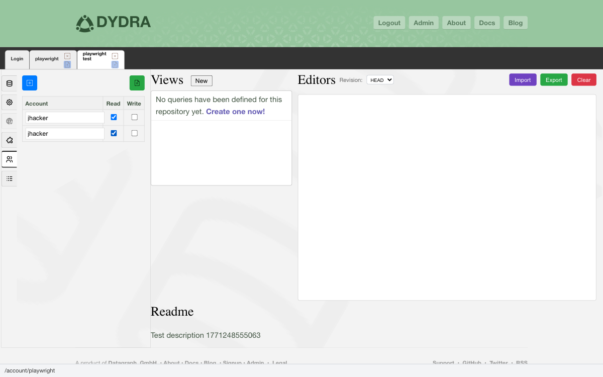

3.1 Giving Your Data a Home
A repository is where your data lives. Not scattered across files on your desktop, not buried in a spreadsheet, not lost somewhere in an email attachment from six months ago — but organized, named, and ready to answer questions. When you create a repository in Dydra, you are giving your data a proper home.
Formally speaking, a repository is a persistent, named collection of RDF quads — statements that each carry a subject, a predicate, an object, and a graph context. But you do not need to think about it that way. Think of it as a container. You put data in, you ask questions of it, you take data out. This chapter covers all of that.
3.2 Creating a Repository
Starting a new repository takes only a moment:
- A name for your repository — something that will still make sense to you six months from now
- A storage type:
- lmdb — standard persistent storage, and the right choice for most purposes
- lmdb-revisioned — the same, but with a full revision history; choose this when you need to track how your data has changed over time

Figure 3.1: The repository creation dialog.
MyData and mydata would be two different repositories.
3.3 What You Will See in a Repository
Open a repository and the system shows you its story:
- The name and a brief summary of what it holds
- A longer description and abstract, if you have written one
- A link to a homepage, if relevant
- How many quads are stored — the count of individual statements
- How much disk space it is using
- The license under which the data is shared
- The status of any import operations in progress
- The list of saved query views
3.4 Updating Repository Information
The metadata fields you can edit:
| Field | What It Holds |
|---|---|
homepage | A web page about this dataset |
summary | A short description — a sentence or two |
description | A fuller description of the data and its purpose |
abstract | An overview or synopsis |
privacy_setting | Whether the repository is public or private |
permissible_ip_addresses | A list of IP addresses allowed to access it |
prefixes | Namespace prefix declarations for SPARQL queries |
3.4.1 How to Edit

Figure 3.2: A metadata field in edit mode.

Figure 3.3: The Save button.
3.5 Bringing Data In
A repository without data is just an empty room. Here is how to fill it.
3.5.1 The Formats You Can Import
Dydra accepts data in a good variety of standard RDF formats:
- Turtle (.ttl) — compact and human-readable, a popular choice
- RDF/XML (.rdf, .xml) — the original W3C format
- N-Triples (.nt) — one statement per line, simple and reliable
- N-Quads (.nq) — like N-Triples, but includes graph context
- TriG (.trig) — Turtle with named graph support
- JSON-LD (.jsonld, .json) — RDF expressed in JSON, for those who come from that world
- CSV (.csv) — tabular data, transformed into RDF
3.5.2 Importing a File from Your Computer

Figure 3.4: The import dialog with a file selected.
3.5.3 Importing from a URL
If your data lives somewhere on the web, you can pull it in directly:

Figure 3.5: The import dialog with a URL specified.
3.6 Getting Data Out
3.6.1 Export Formats
You can take your data out in any of these forms:
- Turtle (.ttl)
- N-Triples (.nt)
- RDF/XML (.rdf)
- JSON-LD (.jsonld)
- TriG (.trig)
- CSV (.csv)
- Graphviz (.gv) — for turning your graph into a visual diagram
3.6.2 How to Export

Figure 3.6: Choosing an export format.
3.7 Sharing With Others
Data is often more useful when it can be shared. Dydra lets you invite collaborators to a repository and control what they can do there.
3.7.1 Adding a Collaborator

Figure 3.7: Adding a collaborator and choosing their permission level.
- Read — they can query and export, but not change anything
- Write — they can modify data and configuration
3.7.2 A Word on Permissions
- Start with the minimum. Give people read access first. You can always grant more later.
- Review periodically. Check your collaborator list now and then. Remove access that is no longer needed.
- Keep a record. It is good practice to note who has access and why, especially for sensitive datasets.
3.7.3 Removing a Collaborator
Find the collaborator's entry in the list, click the delete control next to their name, confirm the removal, and save. That is all there is to it.

Figure 3.8: Confirming a collaborator removal.
3.7.4 Changing a Collaborator's Permissions
Click the permission level shown next to a collaborator's name, select the new level from the options that appear, and save your changes.

Figure 3.9: Editing a collaborator's permission level.
3.8 Clearing All the Data
Sometimes you need to start fresh — keep the repository itself but empty it out entirely. That is what the clear operation does. It removes every quad stored in the repository, while leaving the repository structure, settings, and views intact.

Figure 3.10: The clear confirmation dialog.
3.9 Deleting a Repository Entirely
Deleting a repository removes everything: the data, the views, the configuration, all of it. It is a complete and final removal.
3.10 When Things Go Sideways
3.10.1 Import Problems
- Make sure the file format is one the system supports
- Check that the RDF syntax in the file is valid
- For URL imports, verify your network connection can reach the source
- Confirm you have write permission on the repository
- Read the error message carefully — it usually points right at the problem
3.10.2 Export Problems
- Make sure the repository actually contains data
- Try a different format if one is not working
- Check your browser's download settings — it may be blocking the file
- Confirm you have read permission
3.11 What Comes Next
With your repositories in hand, the next natural step is learning to ask them questions — which is what Chapter 4 is all about:
- Creating and running SPARQL views — Chapter 4
- Habits that serve you well in the long run — Chapter 5
- Format reference tables — Appendices